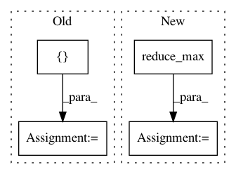

e9086f5d37f5f46b8327bf022c7b0c70d42460d1,magenta/models/shared/events_rnn_graph.py,,build_graph,#Any#Any#Any#,56
Before Change
if mode == "train" or mode == "eval":
if hparams.skip_first_n_losses:
logits = tf.reshape(logits_flat, [hparams.batch_size, -1, num_classes])
logits = logits[:, hparams.skip_first_n_losses:, :]
logits_flat = tf.reshape(logits, [-1, num_classes])
labels = labels[:, hparams.skip_first_n_losses:]
labels_flat = tf.reshape(labels, [-1])
mask_flat = tf.reshape(tf.sequence_mask(lengths, dtype=tf.float32), [-1])
After Change
mask = tf.sequence_mask(lengths)
if hparams.skip_first_n_losses:
skip = tf.minimum(lengths, hparams.skip_first_n_losses)
skip_mask = tf.sequence_mask(skip, maxlen=tf.reduce_max(lengths))
mask = tf.logical_and(mask, tf.logical_not(skip_mask))
mask = tf.cast(mask, tf.float32)
mask_flat = tf.reshape(mask, [-1])
In pattern: SUPERPATTERN
Frequency: 3
Non-data size: 4
Instances
Project Name: tensorflow/magenta
Commit Name: e9086f5d37f5f46b8327bf022c7b0c70d42460d1
Time: 2017-03-23
Author: earnest.marshi@gmail.com
File Name: magenta/models/shared/events_rnn_graph.py
Class Name:
Method Name: build_graph
Project Name: jakeret/tf_unet
Commit Name: 67bd0ba416366c2b31006a5bf951ae9586135f7c
Time: 2018-06-25
Author: joel.akeret@gmail.com
File Name: tf_unet/layers.py
Class Name:
Method Name: pixel_wise_softmax
Project Name: dpressel/mead-baseline
Commit Name: 509453992838a524f6442d4e0f07a034390ae1f7
Time: 2020-02-13
Author: dpressel@gmail.com
File Name: layers/eight_mile/tf/layers.py
Class Name: BiLSTMEncoderAll1
Method Name: call